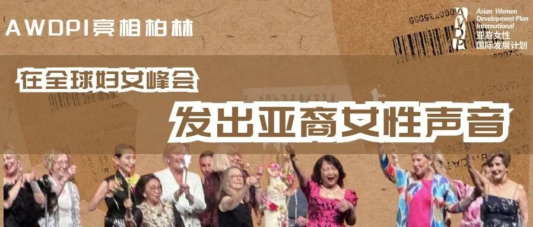
2025年7月，AWDPI亚裔女性国际发展计划作为官方国际合作伙伴，受邀出席第35届全球妇女峰会，在柏林发出亚裔女性坚定而清晰的声音。从高层对话到专题研讨，从文化韧性到科技赋能，AWDPI不仅展示了亚裔女性的力量与潜力，更与全球伙伴携手，开启从“被看见” 到“共同创造”的新篇章。
“七月的柏林，空气中飘着希望的味道。在第35届全球妇女峰会的会场，作为AWDPI（亚裔女性国际发展计划）的代表，我站在这个被誉为"女性达沃斯"的舞台上，第一次如此真切地感受到：我们亚裔女性的声音，正在被世界认真倾听。
---AWDPI合作拓展处负责人Sylvie
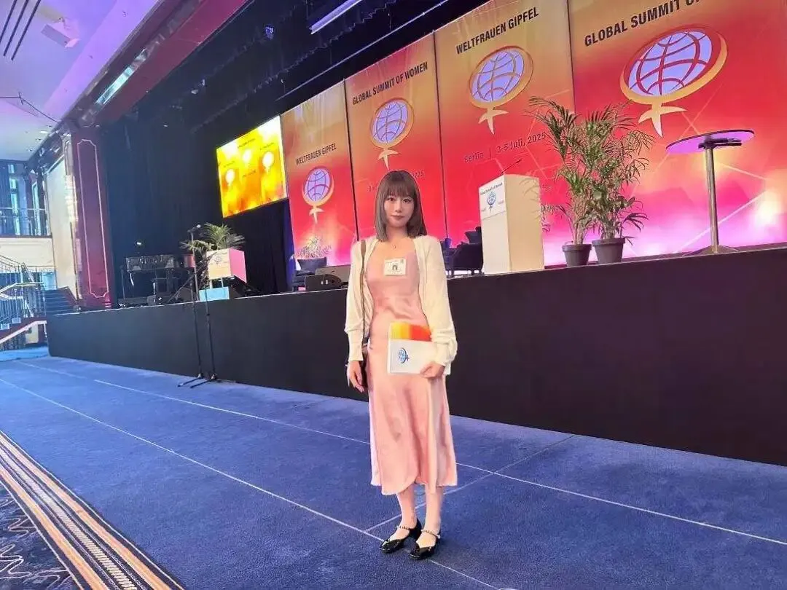
在这个全球性别议题日益受到关注的时代，亚裔女性的身影却常常隐没在集体叙事中。我们的挣扎、突破与贡献，需要被完整地看见。这正是AWDPI来到柏林的意义——我们不只是来参会，更是要来重建属于亚裔女性的叙事。
往期回顾
AWDPI正式成为全球妇女峰会官方国际合作伙伴，将赴柏林为亚裔女性发声！
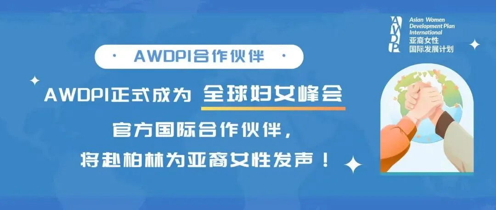
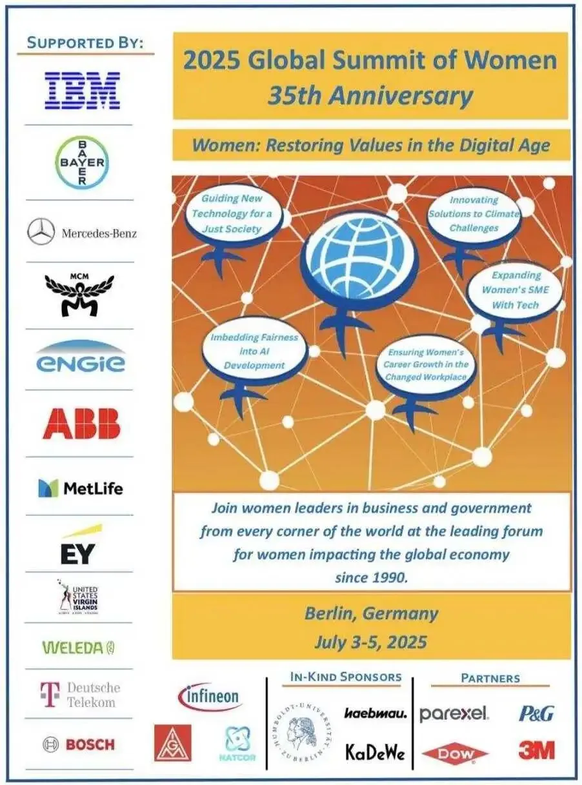
✦
柏林时刻：当真诚遇见理解
✦
「与拉加德的七分钟，胜过千言万语」
在欧洲央行行长Christine Lagarde面前，我们分享了AWDPI在反对家庭暴力与歧视、职业技能培训、女性社群网络建设等方面的实践，致力于为海外亚裔女性创造更多公平就业的机会。“这不只是公益慈善，”我说，“而是真正的赋能。”她专注倾听，并回应道：“亚洲女性需要这样的平台。告诉我，你们最需要什么支持？”这短短七分钟，让我看见国际高层正以全新的眼光看待亚裔女性的力量。
✦
在科技对话中，重新定义可能
✦
与 Mercedes-Benz AMG 首席执行官Michael Schiebe的对话同样令人振奋。"我们不是要争取特殊照顾，"我说，"而是要为科技领域带来不同的视角。"我们探讨的不仅是女性在高科技产业中的代表性，更是如何让亚裔女性进入决策层，而不仅仅是执行层。
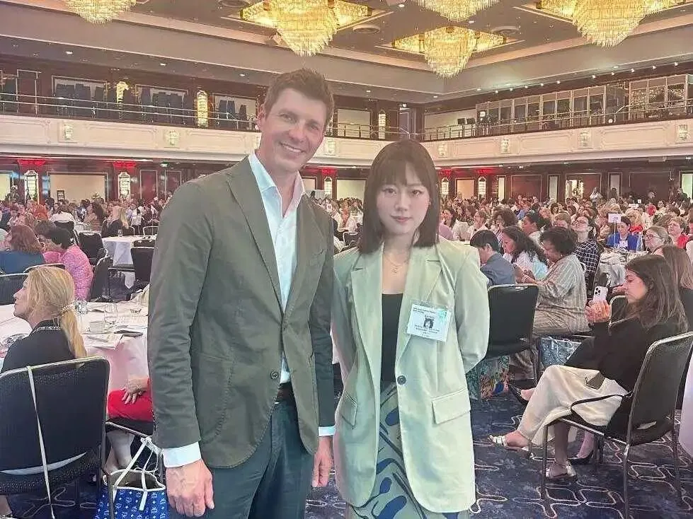
✦
让传统技艺焕发新生
✦
在《文化韧性：传统技艺的数字重生》专题对话中，我提出"用策展思维活化非遗技艺，将其融入女性经济赋权路径"。这个观点获得了联合国及多国代表的高度评价。会后，一位非洲代表主动分享："我们也有这样的女性，我们需要这样的合作。"那一刻我明白，真诚的共鸣从来不需要大声呐喊。
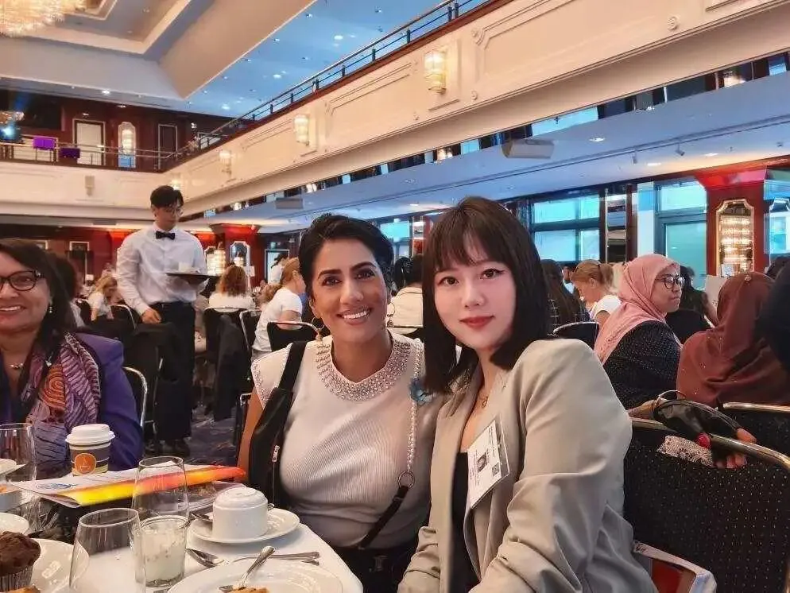
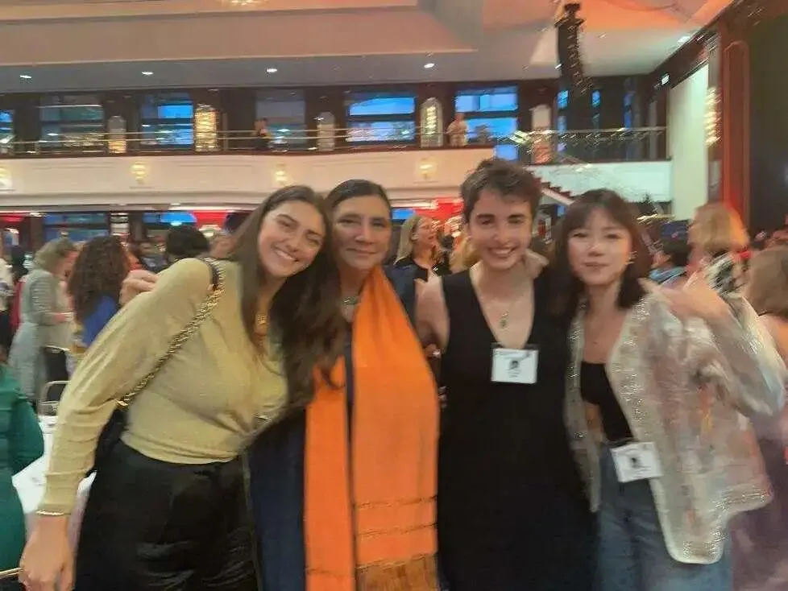
✦
从共鸣到行动：我们共同写下的承诺
✦
峰会主席Irene Natividad 特别肯定了AWDPI的独特价值："你们不是另一个女性组织，你们是桥梁。"
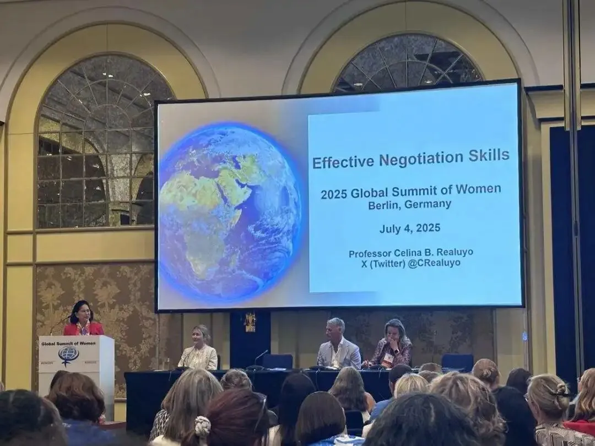
这份认可正在转化为具体的合作：
与德国KaDeWe合作打造亚裔女性设计师孵化展，建立长期市场通道
与阿联酋Women in Tech共建"Dubai Women in Innovation"计划
推动女性教育与社会创新的跨区域合作
这些不只是合作意向，更是亚裔女性走向世界舞台的一个个具体入口。
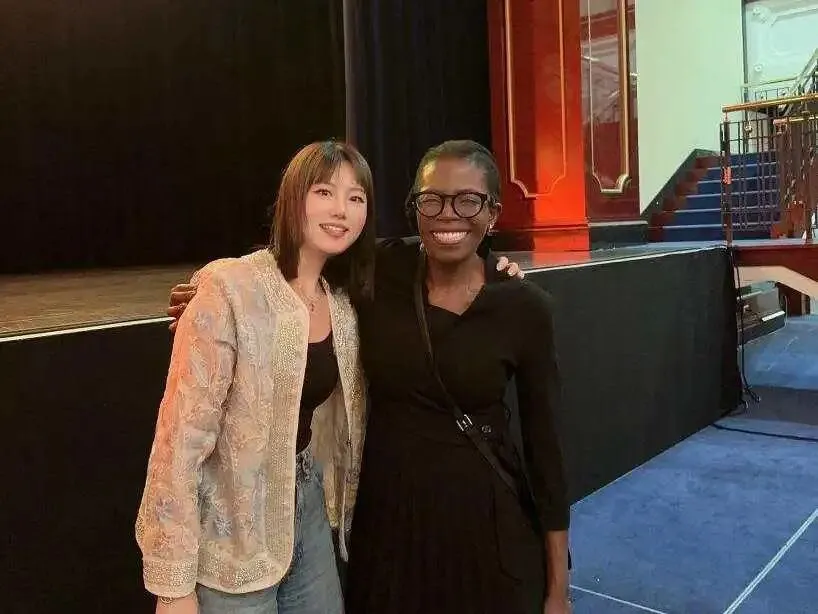
✦
心声：带着千万个“她”的嘱托前行
✦
我们带着千千万万的“她”嘱托，参与峰会的每个时刻。 当我发言时，我不仅代表AWDPI，更代表着那些在工厂、在田野、在办公室、在家庭等更多环境默默努力的女性。她们也许永远不会站上国际舞台，但她们的故事同样值得被倾听。
与Lagarde 的对话、与各国代表的交流、在专题讨论中的发言——这些看似个人的时刻，其实属于每一个在各自领域发光的女性。
✦
前路：从“被看见"到"共同创造”
✦
柏林只是开始。AWDPI拒绝成为又一个“象征性存在”的组织。我们要推动的是真实、可持续的改变：
陪伴受暴女性走出阴影，重启人生
帮助移民女性获得立足社会的职业技能
让亚裔女性的声音，真正被纳入国际议程
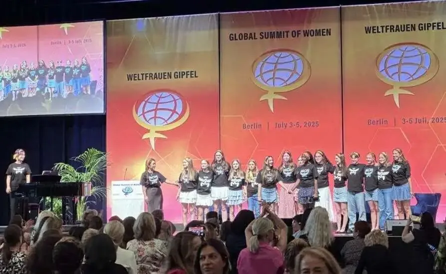
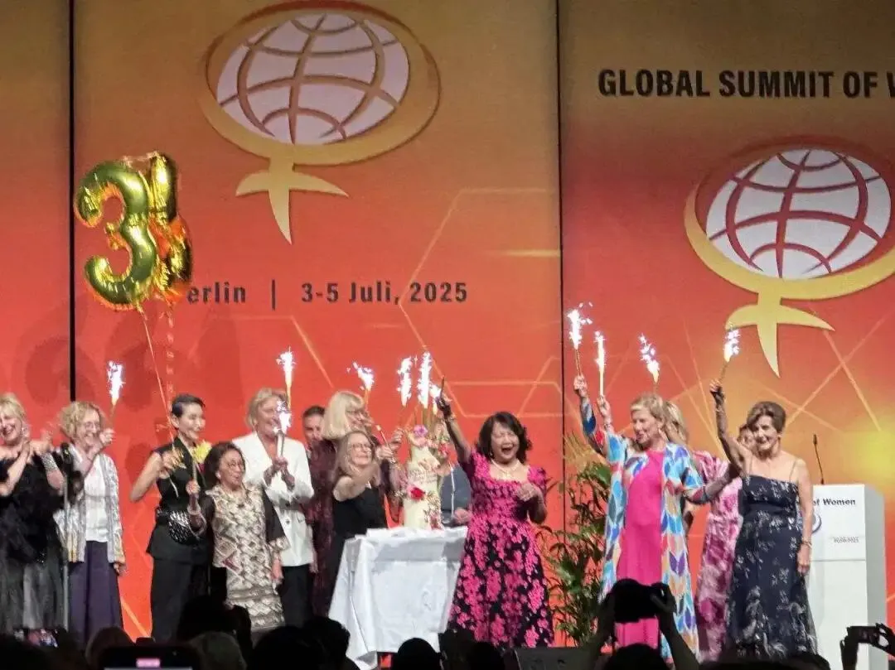
回国的航班上，我翻开笔记本，想起一位柬埔寨女艺术家的话："我们不是要挤进已有的世界，我们要和世界一起，创造更宽广的天地。"
“Strong alone, unstoppable together.”这句话在柏林有了新的意义。我们每个人的力量或许微小，但当我们连结在一起，就能形成不可阻挡的潮流。
这趟柏林之行AWDPI登上了世界舞台，AWDPI不仅是参与者，更是推动者。我们相信：每一个她，都值得被全世界看见。 这一次，我们看见了“对话的力量”。在一次次交流与倾听中，我们收获了三重深刻的体会：
撰稿｜Sylvie
排版&封面｜池一诺